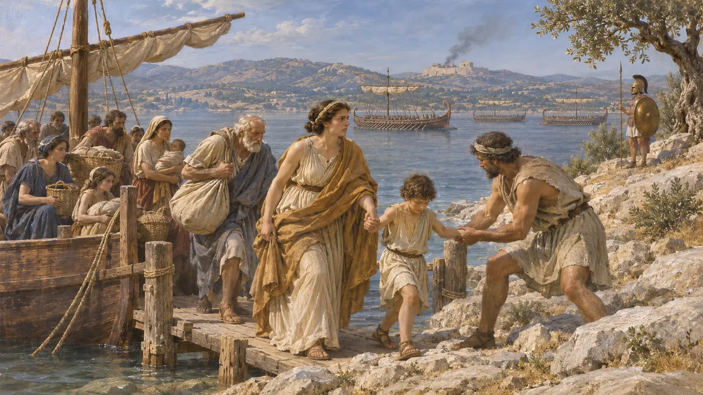
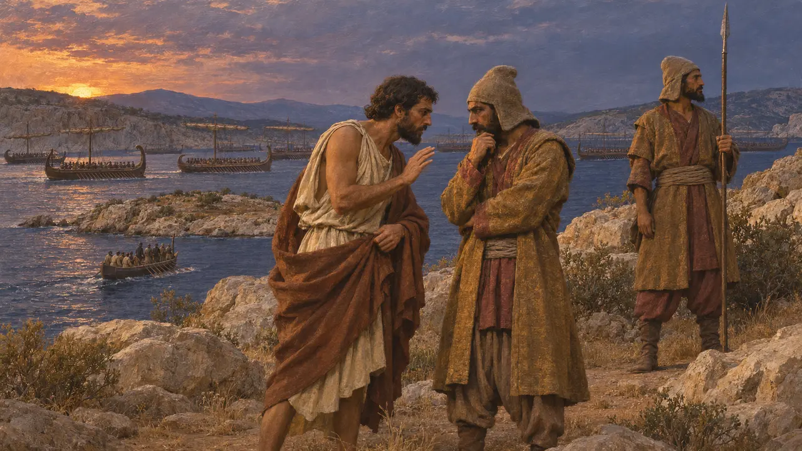
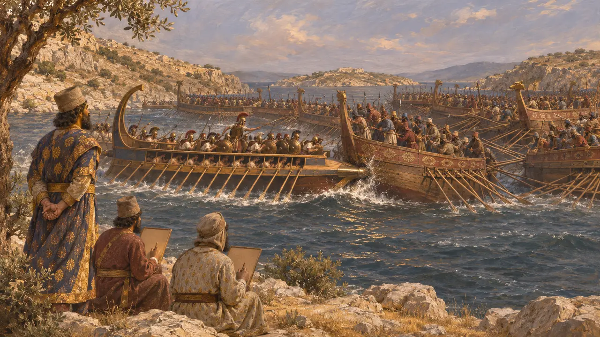
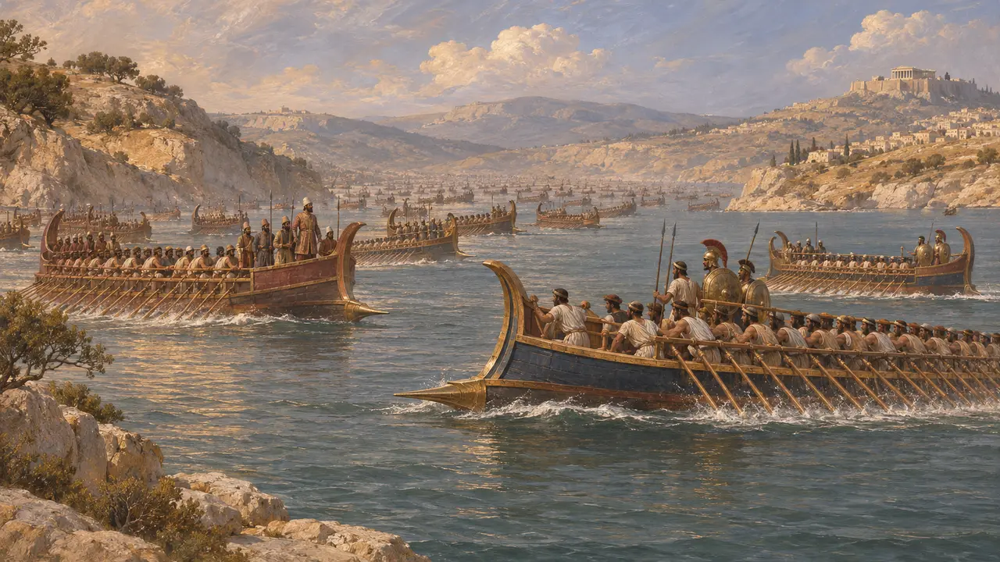
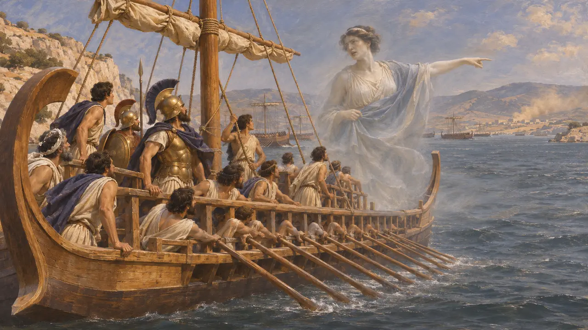

Саламин
Остров и пролив близ Афин, место морской битвы в сентябре 480 г. до н. э.
Саламин — остров в Сароническом заливе, сразу к западу от Афин, отделённый от побережья Аттики узким проливом. В сентябре 480 г. до н. э. союзный греческий флот, большую часть кораблей которого выставили Афины, разбил там флот Царя. Поражение положило конец надеждам Ксеркса на быстрое завоевание: он вернулся в Азию, оставив Мардония продолжать войну на суше.
В игре: Саламин не входит в число уровней игры. Он появляется лишь в заметке летописи о победе греков в сентябре 480 г. до н. э., за которой Ксеркс наблюдал с берега, что согласуется с Геродотом.

Афины уходят на остров
Античное свидетельствоГеродот сообщает, что после Фермопил союзный флот отошёл от Артемисия к Саламину, а афиняне переправили свои семьи в Трезен, на Эгину и на сам Саламин. Затем персидские войска заняли покинутый город и сожгли Акрополь, где немногие защитники держались за деревянным заслоном. Союзные военачальники спорили, дать ли бой у Саламина или отступить к Коринфскому перешейку.
Herodotus 8.40-41, 8.51-53, 8.56-63

Весть в ночи
Античное свидетельствоГеродот сообщает, что Фемистокл, опасаясь, что союзники разбегутся, послал своего раба Сикинна сказать персам, будто греки намерены ускользнуть. Корабли Ксеркса всю ночь перекрывали выходы из пролива, а на островок Пситталию высадили войска. Эсхил, который, по позднейшему преданию, сражался в этой битве, излагает похожую историю в своей трагедии «Персы», поставленной в 472 году до н. э.
Herodotus 8.75-76; Aeschylus, Persians

Битва в проливе
Античное свидетельствоВ тесных водах более многочисленный персидский флот не мог использовать своё превосходство: его корабли сталкивались друг с другом, а греки таранили их. Ксеркс наблюдал за битвой от подножия горы Эгалеос, а писцы отмечали, кто из командиров кораблей сражался доблестно. Его брат Ариабигн, флотоводец, погиб, Артемисия спаслась, протаранив корабль из собственного флота, а Аристид повёл гоплитов, перебивших персов на Пситталии.
Herodotus 8.86-90, 8.95

Сколько кораблей и чей это рассказ
СпорныйПо Геродоту, в начале похода у Царя было 1207 триер, а потери восполнялись. У Саламина он насчитывает около 380 греческих кораблей. Эсхил даёт грекам 310 кораблей, а Ксерксу 1000, из них или сверх того 207 быстроходных. Большинство историков считают персидские цифры преувеличенными, а сам флот — поредевшим из-за бурь и боёв у Артемисия, так что истинное соотношение сил по-прежнему остаётся предметом споров. Ни один персидский текст не упоминает об этой битве; все дошедшие до нас рассказы — греческие.
Herodotus 7.89, 8.48, 8.66, 8.82; Aeschylus, Persians; P. Briant, From Cyrus to Alexander, 2002

Знамения и позднейшие предания
Позднейшая легендаГеродот передаёт рассказы о сверхъестественном: перед битвой со стороны Элевсина поднялось облако пыли и раздался ритуальный клич, а призрачная женщина устыдила греков и заставила их атаковать. Плутарх, писавший примерно шесть веков спустя, повторяет утверждение Фания Лесбосского, будто Фемистокл перед сражением принёс в жертву трёх персидских пленников. Многие историки сомневаются в этом рассказе.
Herodotus 8.65, 8.84; Plutarch, Themistocles 13
Источники
- Herodotus, Histories 8.40-96
- Aeschylus, Persians
- Plutarch, Themistocles
- P. Briant, From Cyrus to Alexander, 2002
- B. Strauss, The Battle of Salamis, 2004